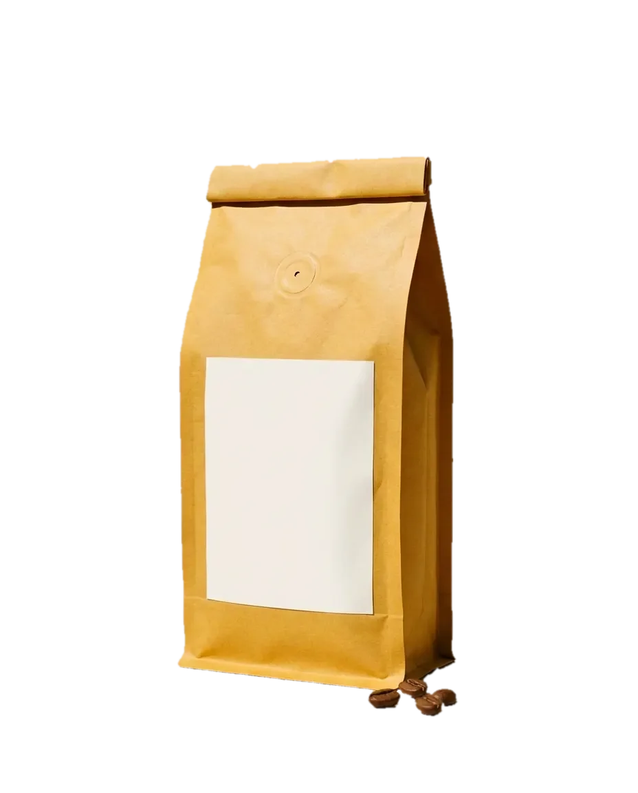

Torréfié mardi. Dans votre tasse jeudi.
Café de spécialité de la Belle de Mai, à Marseille, livré chez vous dès 12,50 €.

Cueilli à la main, quand c'est rouge.
Quatre petites fermes, en Éthiopie, en Colombie, au Rwanda et au Brésil. On les connaît par leur nom.
Premier crac à 9 minutes


Emballé mardi. Chez vous jeudi.
Moulu pour votre cafetière, dans un sachet qui finit au compost.
ÉthiopieKongaJasmin, bergamote, pêche blanche.

ColombieEl MiradorChocolat au lait, panela, pomme rouge.

RwandaKanzuCassis, hibiscus, thé noir.

BrésilBoa VistaNoisette, cacao, caramel.

Quatre cafés. Pas un de plus.

Dès 12,50 € les 250 g, livrés.
Tous les 15 jours ou tous les mois. Sans engagement, pause en un clic.

Ça sent bon jusqu'au boulevard.
27 rue Guibal, Belle de Mai. Dégustation le samedi à 11 h. Voir le plan (nouvel onglet)

Mardi prochain, on torréfie pour vous.
Commandez avant lundi 23 h 59 : votre café part de la fournée du mardi.
Le Kanzu, je l'attends le jeudi comme le journal.
Inès, MarseilleMon moka n'a jamais eu ce goût de fruit.
Thomas, Lyon